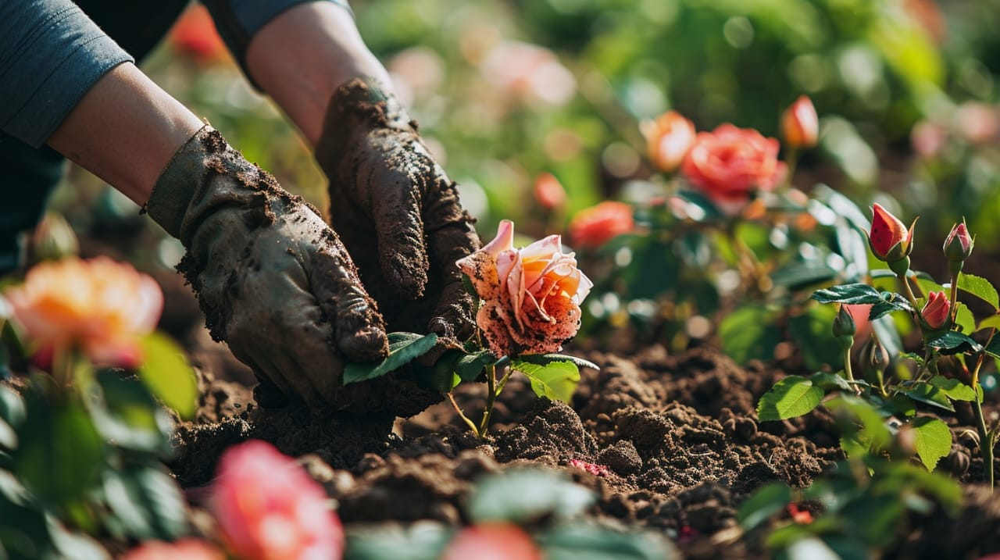
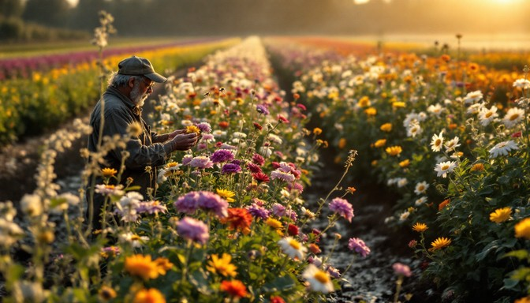
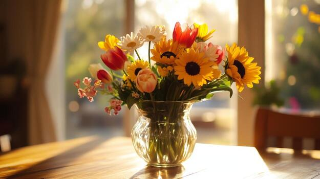
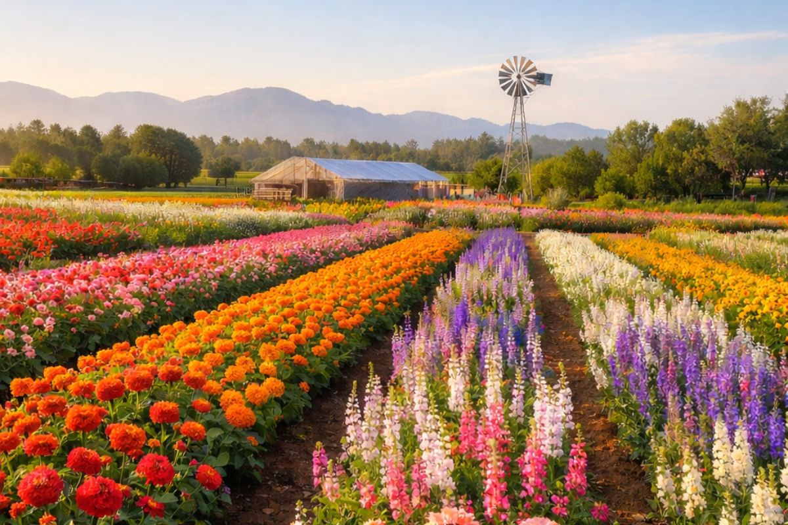

Here we proudly and lovingly grow the most beautiful South African flowers — from roses and proteas to sunflowers and many more. We farm sustainably and our greatest joy is to share the beauty of our beloved flora with you…

Our flowers are cultivated with care.
Each flower is nurtured with love and respect for nature. We use sustainable methods to achieve the best results.

Only the best flowers are chosen.
We harvest flowers at their perfect moment. Each bloom is hand-picked for quality and beauty.

Fresh, local flowers for every occasion.
Each flower is fresh from the farm and will fill your space with natural color and fragrance.
